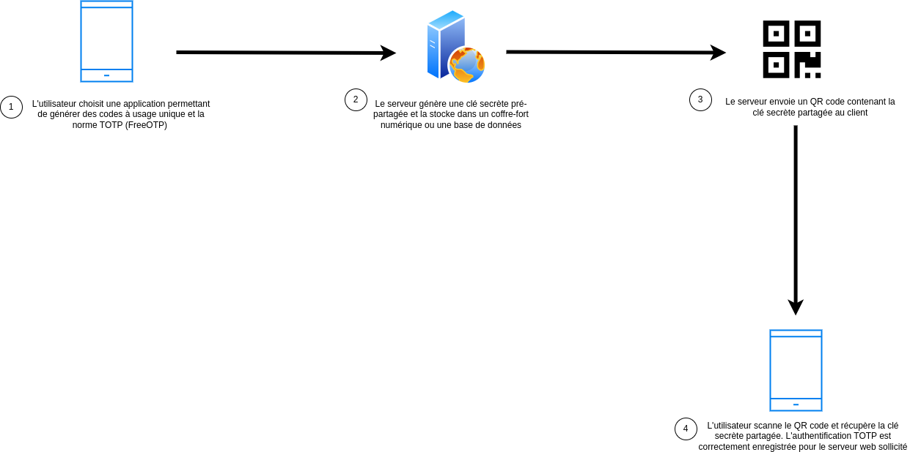
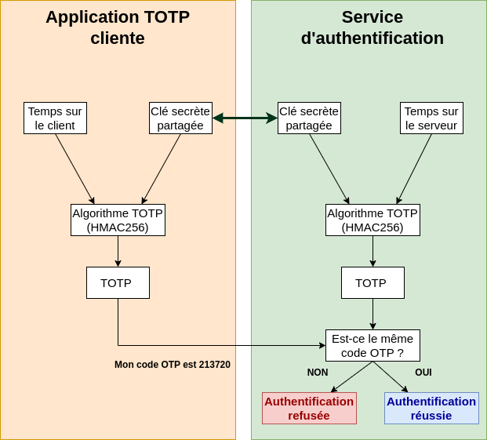

Authentification TOTP sur Debian — Agence Frankfurt¶
Objectif¶
Mettre en place une authentification forte à deux facteurs (2FA) sur l’ensemble des serveurs Debian de l’agence Frankfurt, afin de renforcer la sécurité des accès SSH par l’ajout d’un code temporaire généré par une application mobile (TOTP).
1. Principe du TOTP¶
Le TOTP (Time-based One Time Password) repose sur un code unique généré toutes les 30 secondes à partir : - d’une clé secrète partagée entre le serveur et le client ; - de l’horloge du système.
Ce code vient compléter le mot de passe habituel, ce qui empêche toute connexion même en cas de fuite du mot de passe principal.
2. Installation du module PAM TOTP¶
Sur chaque serveur Debian de l’agence Frankfurt :
sudo apt update
sudo apt install libpam-google-authenticator -y
Ce module permet d’intégrer Google Authenticator (ou tout autre outil compatible TOTP comme Authy, Aegis ou FreeOTP) dans le processus d’authentification PAM.
3. Configuration de l’utilisateur¶
L’utilisateur concerné (par exemple admin-frankfurt) génère sa clé TOTP :
google-authenticator
Le script affiche un QR Code à scanner avec l’application mobile.
Conservez le code de secours (en cas de perte du téléphone).
Info
Si le QR Code ne s’affiche pas bien dans le terminal, copiez la clé secrète affichée manuellement dans votre application TOTP.
4. Intégration avec SSH¶
Éditez le fichier PAM de SSH :
sudo nano /etc/pam.d/sshd
auth required pam_google_authenticator.so
Puis modifiez la configuration SSH :
sudo nano /etc/ssh/sshd_config
Activez le challenge de type TOTP :
ChallengeResponseAuthentication yes
Redémarrez le service SSH :
sudo systemctl restart ssh
5. Test de connexion¶
Depuis un autre poste :
ssh admin-frankfurt@<adresse_IP_serveur>
Le système demande :
1. le mot de passe habituel,
2. puis le code TOTP à 6 chiffres généré sur votre téléphone.
Si le code est correct → connexion autorisée
Sinon → refus d’accès
6. Schéma du fonctionnement¶
Génération de la clé et association mobile :¶

Connexion sécurisée via TOTP :¶

7. Bonnes pratiques¶
- Synchroniser régulièrement l’horloge de chaque serveur (
ntpousystemd-timesyncd) pour éviter les désynchronisations TOTP. - Configurer au minimum deux comptes administrateurs avec TOTP activé.
- Sauvegarder la configuration PAM et SSH avant toute modification :
sudo cp /etc/pam.d/sshd /etc/pam.d/sshd.backup sudo cp /etc/ssh/sshd_config /etc/ssh/sshd_config.backup
Résultat attendu¶
- L’accès SSH de tous les serveurs Debian de l’agence Frankfurt est désormais protégé par une authentification à deux facteurs.
- Chaque connexion nécessite un mot de passe et un code TOTP unique.
- Cette configuration renforce significativement la sécurité du système d’information.